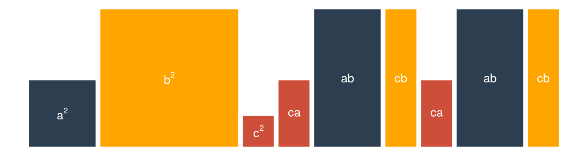

A continuación presentaremos algunas multiplicaciones de las cuales la gente ha obtenido fórmulas para hacer cálculos rápidos. La mayor parte de estos obtienen su nombre de cuando interesaba que la gente supiera computar (i.e. calcular rápido) y no pensar . No es necesario que te aprendas ninguna de las fórmulas porque salen a partir de los axiomas. Si conoces los axiomas no requieres ninguna fórmula.
Como segunda nota hay dos actividades principales que puedes tener en un ejercicio de álgebra: expandir y factorizar. Usualmente, para quienes plantean ejercicios, expandir consiste en dejar la menor cantidad de multiplicaciones posibles. Por ejemplo si expandimos:
\[ 8 \cdot (a + x) + 9 \cdot (x + a) + a \]
Obtenemos (usando distributividad): \[ 8 a + 8 x + 9 x + 9a + a = 18 a + 17x \]
Mientras que si factorizamos el propósito es escribir todo como una multiplicación, \[ x^2 + 9x + 14 \] se transforma en1: \[ (x + 2)\cdot(x + 7) \] ¡Verifícalo!
El primer resultado que verificaremos es el siguiente:
\[ (a + b)^2 = a^2 + 2ab + b^2 \]
El lado derecho de la ecuación se conoce como el trinomio cuadrado perfecto pero nadie es tan perfecto como tú, bb.
Esto lo podemos ver geométricamente como el área de un cuadrado de lado \(a + b\):
De donde se sigue que \((a + b)^2\) lo podemos ver como \(a^2 + ab + ab+ b^2 = a^2 + 2ab + b^2\)
Algebraicamente (usamos los axiomas) tenemos lo siguiente:
\[ (a + b)^2 = (a + b)(a + b) \]
Usamos distributividad: \[ (a + b)(a + b) = (a + b)a + (a + b)b \] Volvemos a aplicar distributividad: \[ (a + b)a + (a + b)b = a^2 + ba + ab + b^2 \] Conmutamos \(ba\) para que sea \(ab\): \[ a^2 + ba + ab + b^2 = a^2 + ab + ab + b^2 \] y los sumamos: \[ a^2 + ab + ab + b^2 = a^2 + 2ab + b^2 \]
Concluimos entonces: \[ (a + b)^2 = a^2 + 2ab + b^2 \]
De manera resumida: \[\begin{equation}\nonumber \begin{aligned} (a + b)^2 & = (a + b)(a + b) \\ & = (a + b)a + (a + b)b \\ & = a^2 + ba + ab + b^2 \\ & = a^2 + ab + ab + b^2 \\ & = a^2 + 2ab + b^2 \end{aligned} \end{equation}\]
El factor común es un renombramiento de la propiedad distributiva:
\[ k\cdot a + k \cdot b + k \cdot c = k (a + b + c) \]
Lo podemos ver gráficamente:
donde podemos descomponer el rectángulo con área \(k(a + b + c)\) dada por la base \(a + b +c\) y la altura \(k\) en la suma de los rectángulos de misma altura con áreas \(ka\), \(kb\) y \(kc\). Notamos que: \[ k\cdot a + k \cdot b + k \cdot c = k (a + b + c) \]
Algebraicamente esto lo podemos demostrar con una doble aplicación de la propiedad distributiva: \[\begin{equation}\nonumber \begin{aligned} k (a + b + c) & = k \big(a + (b + c) \big) \\ & = ka + k(b+c) \\ & = ka + kb + kc \end{aligned} \end{equation}\] Lo cual demuestra el resultado.
Este producto es una generalización de el binomio cuadrado (¿por qué?). Lo que queremos demostrar es:
\[ (x + a) \cdot (x + b) = x^2 + (a + b) x + ab \]
Esto lo podemos hacer mediante una doble aplicación de la propiedad distributiva: \[\begin{equation}\nonumber \begin{aligned} (x + a) \cdot (x + b) & = (x + a) \cdot x + (x + a) \cdot b \\ & = x \cdot x + a \cdot x + b \cdot x + a \cdot b \\ & = x^2 + (a + b) x + ab \end{aligned} \end{equation}\] donde $ a x + b x = (a + b)x$ lo obtuve a partir de una agrupación por factor común.
Otra forma de verlo puede ser a través de un rectángulo con base \(x + a\) y altura \(x + b\) (área total \((x+a)(x+b)\)) el cual podemos subdividir en los cuadrados de área \(x^2\), \(ab\), \(ax\) y \(bx\) como sigue:
Los binomios conjugados, o diferencia de cuadrados es más fácil verlo algebraicamente que con geometría; empero, haremos las dos para demostrar la expresión: \[ (a + b)\cdot (a - b) = a^2 - b^2 \] Para ello utilizamos la propiedad distributiva dos veces como hicimos en el ejemplo anterior: \[\begin{equation}\nonumber \begin{aligned} (a + b) \cdot (a - b) & = (a + b) a + (a + b) (-b) \\ & = a^2 + ba + a(-b) + b(-b) \\ & = a^2 + ab - ab - b^2 \\ & = a^2 - b^2 \end{aligned} \end{equation}\] Geométricamente lo que tendríamos que analizar es un rectángulo con lados \(a+b\) y \(a-b\). En primer lugar tomamos un cuadrado de lado \(a\):
Al cual le pegamos un rectángulo de base \(b\) y altura \(a\):
Finalmente encogemos el rectángulo removiéndole \(b\) de altura (las partes que quedan en blanco).
Notamos que el área del cuadrito donde se intersectan los de área \(ba\) y \(ab\) es \(b^2\):
Tenemos entonces que el rectángulo dado por \((a + b)(a - b)\) lo podemos escribir como: \[ (a+b)(a-b) = a^2 - ab + ba - b^2 \] donde el término \(b^2\) está restando porque fue incluido dos veces (uno por cada \(ab\)). Y luego se obtiene: \[ (a+b)(a-b) = a^2 - b^2 \]
2 La adición de cubos está dada por: \[ a^3 + b^3 = (a + b)(a^2 - ab + b^2) \]
Mientras que la diferencia: \[ a^3 - b^3 = (a - b)(a^2 + ab + b^2) \]
Ambos los demostraremos algebraicamente. Para el primero, expandimos el producto mediante la propiedad distributiva: \[ (a + b)(a^2 - ab + b^2) = a(a^2 - ab + b^2) + b(a^2 - ab + b^2) \] de donde se sigue que: \[ (a + b)(a^2 - ab + b^2) = a(a^2 - ab + b^2) + b(a^2 - ab + b^2) = a^3 - a^2b + ab^2 + a^2b-ab² + b^3 \] y podemos eliminar los términos con distinto signo: \[ (a + b)(a^2 - ab + b^2) = a(a^2 - ab + b^2) + b(a^2 - ab + b^2) = a^3 - a^2b + ab^2 + a^2b-ab² + b^3 = a^3 + b^3 \] Ahora te toca a ti demostrar el otro caso. ¡Adelante!
Demuestra (sin revisar las notas) los productos notables muy similares a los que se obtuvieron en estas notas:
\((u - v)^2 = v^2 - 2uv + u^2\)
\((x + a)(x - b) = x^2 + (a - b)x - ab\)
\((x + y)(x - y)(x^2 + y^2) = x^4 - y^4\)
\(a\cdot a + a \cdot b + a \cdot c = a (a + b + c)\)
Utiliza un dibujo para demostrar:
Hint Utiliza las siguientes figuras:

Hint Utiliza las siguientes figuras:
Demuestra usando la técnica que quieras que:
\(ax + by + ay + bx = (a + b)(x + y)\)
\((x + a)(x - b) = x^2 + (a-b)x - ab\)
\(ax + bx + (c + d)x = x \cdot (a + b + c + d)\)
\(x(x+1)(x+2)(x+3) + 1 = (x^2 + 3x + 1)^2\)
Demuestra las siguientes identidades algebraicamente :
\(a^3 = \Bigg( \frac{a(a+1)}{2} \Bigg)^2 - \Bigg( \frac{a(a-1)}{2} \Bigg)^2\)
\((z^2 + z + 1) \cdot (z^2 -z + 1) = z^4 + z^2 + 1\)
\((w + u)^3 = w^3 + u^3 + 3uw(w + u)\)
\((a + b + c + d)^2 = a^2 + b^2 + c^2 + d^2 + 2(ab + ac + ad + bc + bd + cd)\)
\((d- a + b + c)(d - a - b - c) = (d-a)^2 - (b-c)^2\)
\(a^3 + b^3 + c^3 - 3abc = \frac{1}{2}(a + b + c)\Big[ (a-b)^2 + (b-c)^2 + (a-c)^2 \Big]\)
Si \(a = b+c\) entonces \(a^4 + b^4 + c^4 = 2b^2c^2 + 2c^2a^2 + 2a^2b^2\)
Expande las siguientes expresiones2:
\(\big(w + x - (y + z) \big)^3\)
\((g - f)^5\)
\((a - b)(a^9 + a^8b + a^7b^2 + a^6b^3 + a^5b^4 + a^4b^5 + a^3b^6 + a^2 b^7 + a b^8 + b^9)\)
\(1 \cdot \dfrac{x-2}{1-2} \cdot \dfrac{x-3}{1-3} + 4 \cdot \dfrac{x-1}{2-1} \cdot \dfrac{x-3}{2-3} + 9 \dfrac{x-1}{3-1}\cdot \dfrac{x-2}{3-2}\)
\((x + a)(x + b)(x + c)\)
Demuestra que si \[ x = \dfrac{-b + \sqrt{b^2 - 4ac}}{2a} \] entonces: \[ a x^2 + bx + c = 0 \] ¿Ocurre lo mismo si ahora se tiene \[ x = \dfrac{-b - \sqrt{b^2 - 4ac}}{2a} \quad\text{?} \]
Identifica el/los errores en los siguientes ejercicios y corrígelos.
Para una cierta enfermedad se siguieron pacientes hasta que se recuperaron (nadie murió durante este estudio). Sea \(\bar{D}\) el número promedio de días que una persona está enferma con dicha enfermedad (duración promedio de la enfermedad). Sea \(I = \frac{A}{T}\) donde \(A\) es el número de enfermos que se siguieron durante \(T\) días. Se define la siguiente igualdad: \[ \dfrac{P}{1-P} = I \bar{D} \]
Demuestra que \(P = \frac{I \bar{D}}{I \bar{D}+ 1}\).
Interpreta \(P\). ¿Por qué se dice que \(P\) mide la carga de la enfermedad en una población?
Para un grupo de individuos y una enfermedad, se define la fracción atribuible (AF) como: \[ \textrm{AF} = \dfrac{RD}{R_1} \] donde \(RD\) se conoce como la diferencia de riesgo dada por \(RD = R_E - R_N\) donde \(R_E\) es el riesgo de los expuestos de padecer la enfermedad y \(R_N\) el de los no expuestos. El riesgo se define como: \[ R_E = \dfrac{\textrm{Probabilidad de enfermar dado que estuviste expuesto}}{\textrm{Probabilidad de enfermar}} \] mientras que: \[ R_N = \dfrac{\textrm{Probabilidad de enfermar dado que NO estuviste expuesto}}{\textrm{Probabilidad de enfermar}} \]
Se define la razón de riesgo como \(RR = \dfrac{R_E}{R_N}\). ¿Qué significa en términos de probabilidades?
Demuestra que \[ \textrm{AF} = \dfrac{RR-1}{RR} \]
Para una población con fumadores y no fumadores se define la razón de riesgo de los fumadores como \(RR_F = \dfrac{R_{E,F}}{R_{N,F}}\) donde \(R_{E,F}\) es el riesgo de los expuestos que son fumadores y \(R_{N,F}\) el riesgo de los no expuestos que son fumadores Análogamente, \(RR_{\neg F} = \dfrac{R_{E,\neg F}}{R_{N,\neg F}}\) es la razón de riesgo de los no fumadores con \(R_{E,\neg F}\) y \(R_{E,\neg F}\) los riesgos para no fumadores expuestos y no expuestos. Supongamos que hay una proporción \(\pi_F\) de fumadores y \(\pi_{\neg F} = 1 - \pi_F\) de no fumadores. Definimos la fracción atribuible total como: \[ AF = \pi_F AF_F + \pi_{\neg F} A_{\neg F} \] Escribe la fracción atribuible total en términos de \(f_E, f_N, n_E\) y \(n_N\) dados por la tabla:
| Fumadores | No fumadores | Total | |
|---|---|---|---|
| Expuestos | \(f_E\) | \(n_E\) | \(f_E + n_E\) |
| No expuestos | \(f_N\) | \(n_N\) | \(f_N + n_N\) |
| Total | \(f_E + f_N\) | \(n_E + n_N\) |